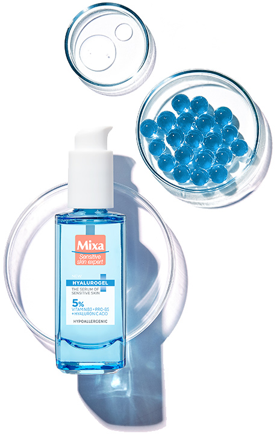
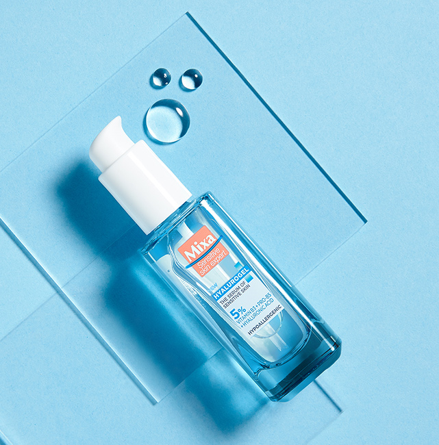
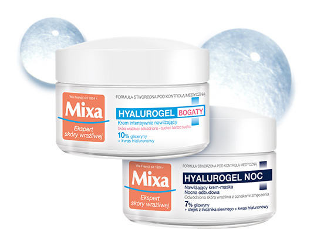

Nawilżenie przez 24h* Dzięki zawartości kwasu
hialuronowego, zdolnego wchłonąć 1000 razy więcej wody niż sam waży,
serum zapewnia intensywne nawilżenie przez 24h.
Sprężystość i zdrowy wygląd Po 4 tygodniach
skóra jest bardziej miękka, gładsza, promienna i wygląda na
wypełnioną.
Natychmiastowe ukojenie Łagodzi skórę wrażliwą
od pierwszego zastosowania, redukując uczucie dyskomfortu i
ściągnięcia.

POTWIERDZONA SKUTECZNOŚĆ

NATYCHMIASTOWO…
81%
kobiet twierdzi, że skóra jest odczuwalnie nawilżona*
78%
kobiet potwierdza odczucie komfortu skóry*
69%
kobiet zaważyło, że skóra wygląda bardziej świeżo*
67%
deklaruje, że skóra jest wygładzona*
POD KONIEC DNIA…
80%
kobiet potwierdziło, że skóra jest odczuwalnie mniej
podrażniona*
*test samooceny, 85 kobiet, aplikacja dwa razy dziennie: rano i
wieczorem
SKONCENTROWANA SIŁA SKŁADNIKÓW AKTYWNYCH W 5% FORMULE
NIANCYNAMID
Wygładza skórę oraz przywraca jej sprężystość i elastyczność.
Reguluje aktywność gruczołów łojowych i działa antybakteryjnie.
PATHENOL
Działa przeciwzapalnie i przyspiesza procesy regeneracji naskórka.
Łagodzi podrażnienia oraz przynosi natychmiastowe ukojenie skóry.
KWAS HIALURONOWY
Nawilża i chroni przed utratą wody, uelastyczniając i ujędrniając
skórę. Zapobiega powstawaniu drobnych zmarszczek oraz sprawia, że
skóra jest miękka i wygładzona.
Zadbaj o rutynę pielęgnacyjną!
1
KROK OCZYSZCZENIE
Zmyj makijaż i oczyść twarz płynem micelarnym Optymalna Tolerancja
i przygotuj skórę na dalszą pielęgnację.
Zadbaj o nawilżenie skóry przez 24h, dzięki bogatemu kremowi na
dzień oraz kremowi-masce na noc z linii Hyalurogel.

OPINIE KONSUMENTEK
“
Cudowny!
“Serum jest w pięknej szklanej buteleczce, pięknie
prezentuje się w łazience.
Jako produkt jest fantastyczne. Świetnie nawilża podrażnioną
skórę. Skóra jest po serum gładka, jędrna. Idealny do skóry
wrażliwej.”
Agnese2aa
Mój ideał
“Jestem bardzo pozytywnie zaskoczona działaniem tego serum.
Niezwykle lekkie i bardzo szybko się wchłania. Już po kilku
użyciach moja skóra stała się widocznie bardziej nawilżona.
Zauważyłam, że jest bardziej sprężysta i napięta. Zero
suchych skórek i podrażnień w codziennej pielęgnacji.”
sloneczko2017
Rewelacja!
“Moją przygodę ze stosowaniem serum mogę opisać jednym
słowem: zachwyt.
Po każdym użyciu - serum przynosiło mi bardzo przyjemne
ukojenie, a przy regularnym stosowaniu produktu: zauważyłam,
że moja skóra staje się bardziej nawilżona i jędrna.
Dotychczasowe podrażnienia pojawiały się coraz rzadziej.”
smieszka_agnieszka
Bomba nawilżająca dla twarzy
“Serum z pewnością zostanie ze mną na dłużej. Doskonale
nawilża i koi suchą o zmęczona skórę. Ma przyjemną żelową
konsystencje i delikatny zapach. Opakowanie jest szklane i
bardzo estetyczne, dzięki pompce sprawnie można wycisnąć
odpowiednią ilość produktu. Działanie serum czuć od razu po
nałożeniu. Po serum czuje się, jakbym nałożyła na twarz
kojący kompres.”
Agata1357
Istne złoto
“Serum dla skóry wrażliwej bardzo mnie zaskoczyło - dobrze
się rozprowadza, pięknie nawilża, sprawia że skóra jest
pełna blasku, widoczne jest ujędrnienie, ma wygodne i
higieniczne opakowanie. Nadaje się dla skóry młodej i
dojrzałej. Jest wydajne i pięknie, a zarazem delikatnie
pachnie. Pozwala na dobre rozprowadzenie kremu. Nie klei
się, nie roluje makijażu - współgra z podkładem.
Jest wydajne - stosuję od miesiąca + przyłączała się mama i
zużycie jest niewielkie ok. 1 cm w buteleczce.
Szczerze polecam :)”
MartaSroczka
Cudowny kosmetyk!
“Kosmetyk ten ma delikatną konsystencję i przecudowny
zapach. Zauważyłam polepszony stan mojej skóry (posiadam
skore wrażliwą i lekko wysuszoną) już po kilku dniach
stosowania. Opakowanie wydajne. Serdecznie polecam.”